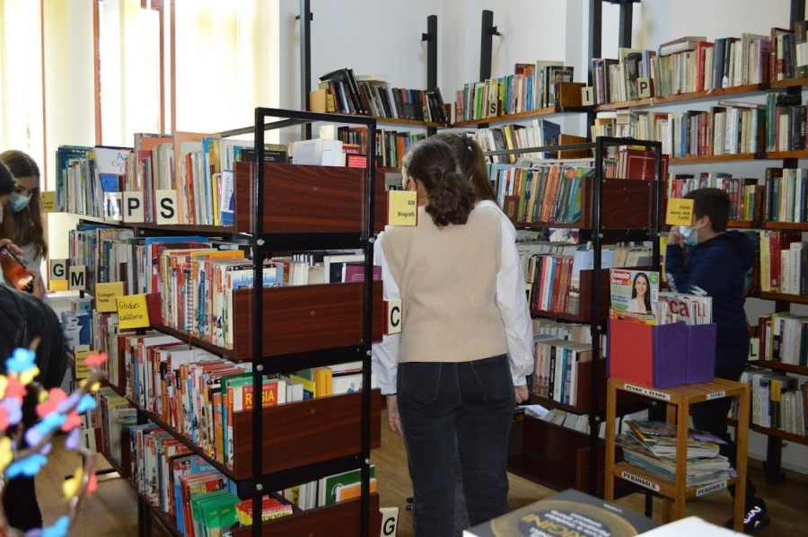
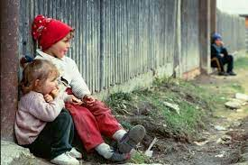
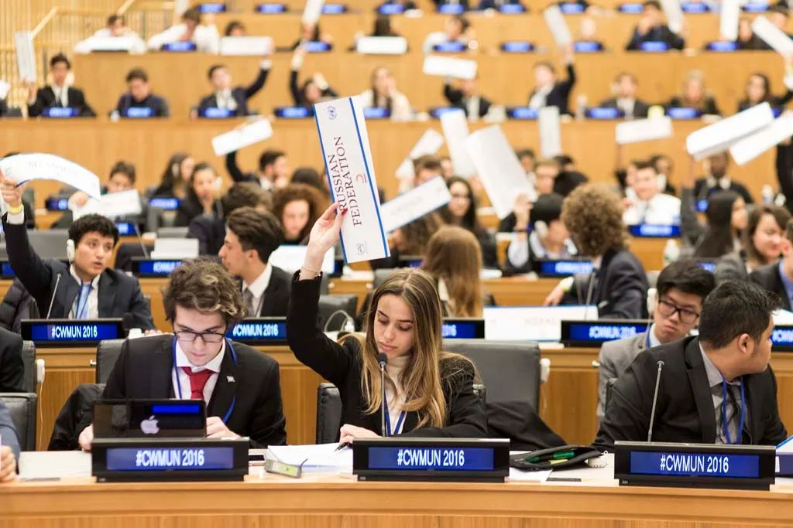
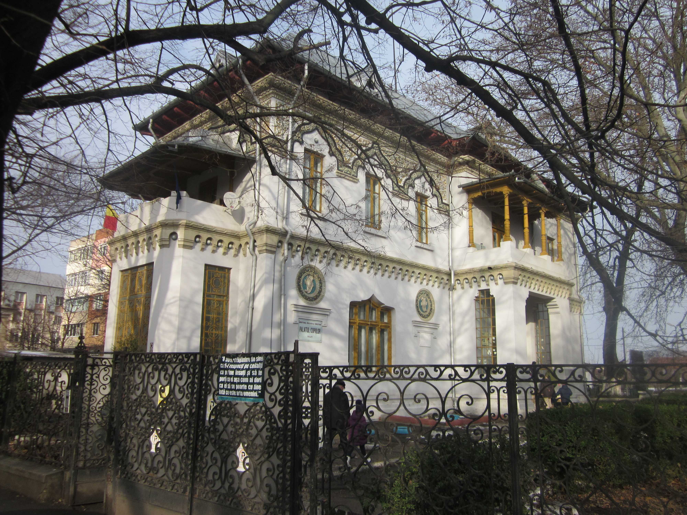
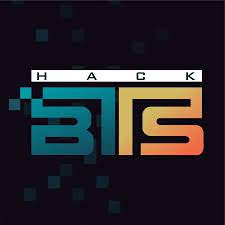

Voluntariat la biblioteca V.A. Urechia
Ajută la organizarea și desfășurarea evenimentelor culturale și educaționale din bibliotecă, sprijinind vizitatorii în găsirea resurselor necesare și promovând pasiunea pentru lectură și învățare.
Conferința pentru digitalizare

Oferă asistență logistică și administrativă în timpul conferinței, sprijinind speakerii și participanții în desfășurarea evenimentului, și contribuind la promovarea noilor tehnologii și soluții digitale.
Tutorat pentru elevii defavorizați
Oferă sprijin academic și mentorat elevilor din comunități defavorizate, ajutându-i să-și îmbunătățească performanțele școlare, să-și dezvolte abilitățile și să-și crească încrederea în propriile capacități.
Workshopuri educaționale online

Organizează și facilitează workshopuri online pe diverse teme educaționale, ghidând participanții în dobândirea de cunoștințe și abilități noi într-un mediu virtual interactiv și stimulant.
Staff la Model United Nations
Asistă în organizarea și desfășurarea simulărilor ONU, sprijinind delegații în pregătirea și prezentarea pozițiilor lor, facilitând dezbaterile și promovând diplomația și rezolvarea pașnică a conflictelor.
Program de alfabetizare

Oferă suport și îndrumare adulților sau copiilor care învață să citească și să scrie, oferind lecții și exerciții practice pentru îmbunătățirea abilităților lor de alfabetizare.
Voluntariat la Palatul Copiilor
Contribuie la organizarea și desfășurarea activităților educaționale și recreative pentru copii, ajutând la coordonarea și facilitarea programelor de dezvoltare personală și culturală.
Staff supraveghetor Hackathon
Asigură buna desfășurare a competiției de hackathon, monitorizând și gestionând participanții, sprijinind echipa organizatoare în gestionarea evenimentului și promovând colaborarea și inovația în domeniul tehnologic.